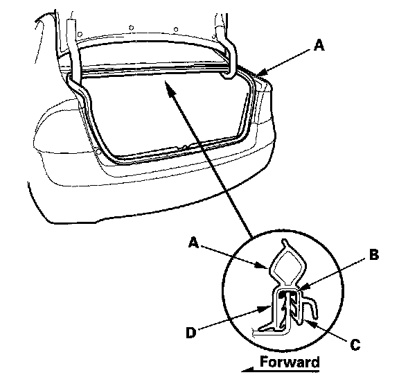

Trunk / Liftgate Weatherstrip: Service and Repair
Trunk Lid Weatherstrip Replacement
1. Remove the trunk lid weatherstrip (A) by pulling it off.
2. Apply clear weatherstrip sealant (B) into the channel of the trunk lid weatherstrip all the way around.
3. Locate the painted alignment mark (C or D) on the trunk lid weatherstrip. Align the painted mark in the center of the trunk lid opening, and install the trunk lid weatherstrip all the way around in the direction shown. Make sure there are no wrinkles in the weatherstrip.
4. Check for water leaks.